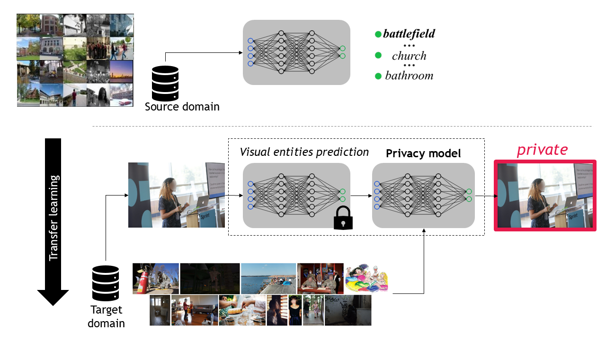

Video presentation
The work was also presented at the 25th Privacy Enhancing Technologies Symposium (PETS'25) on July 16, 2025.
Subjective interpretation and content diversity make predicting whether an image is private or public a challenging task. Graph neural networks combined with convolutional neural networks (CNNs), which consist of 14,000 to 500 millions parameters, generate features for visual entities (e.g., scene and object types) and identify the entities that contribute to the decision. In this paper, we show that using a simpler combination of transfer learning and a CNN to relate privacy with scene types optimises only 732 parameters while achieving comparable performance to that of graph-based methods. On the contrary, end-to-end training of graph-based methods can mask the contribution of individual components to the classification performance. Furthermore, we show that a high-dimensional feature vector, extracted with CNNs for each visual entity, is unnecessary and complexifies the model. The graph component has also negligible impact on performance, which is driven by fine-tuning the CNN to optimize image features for privacy nodes.

The work was also presented at the 25th Privacy Enhancing Technologies Symposium (PETS'25) on July 16, 2025.
A. Xompero and A. Cavallaro, Learning Privacy from Visual Entities,
Proceedings on Privacy Enhancing Technologies (PoPETs), vol. 2025, n. 3, pp. 1-21, March 2025
Bibtex format
@Article{Xompero2025PoPETS,
title={Learning Privacy from Visual Entities},
author={Alessio Xompero and Andrea Cavallaro},
journal={Proceedings on Privacy Enhancing Technologies},
volume={2025},
number={3},
pages={261–281},
month={Mar},
year={2025},
doi={10.56553/popets-2025-0098}
}
This work was supported by the CHIST-ERA programme through the project GraphNEx, under UK EPSRC grant EP/V062107/1.